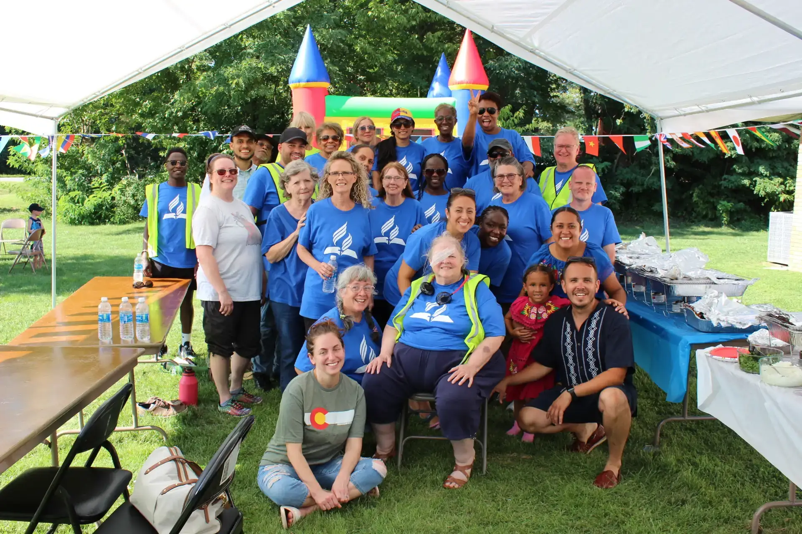
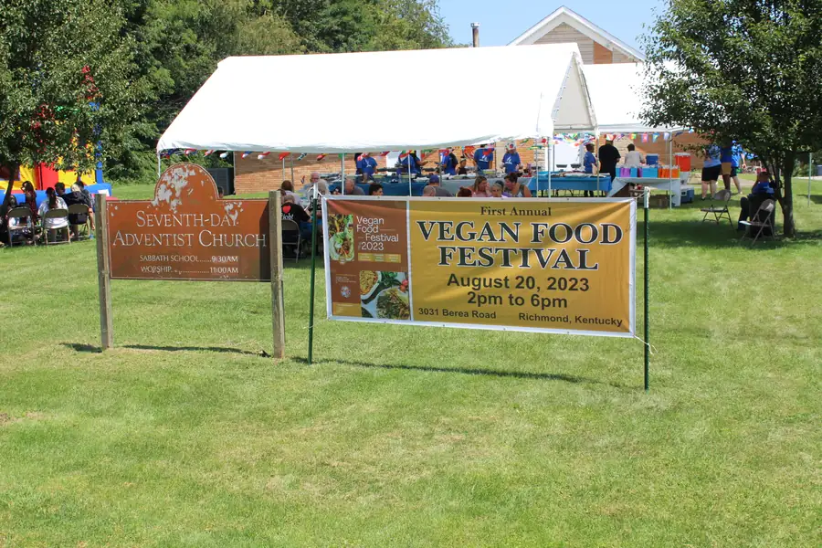
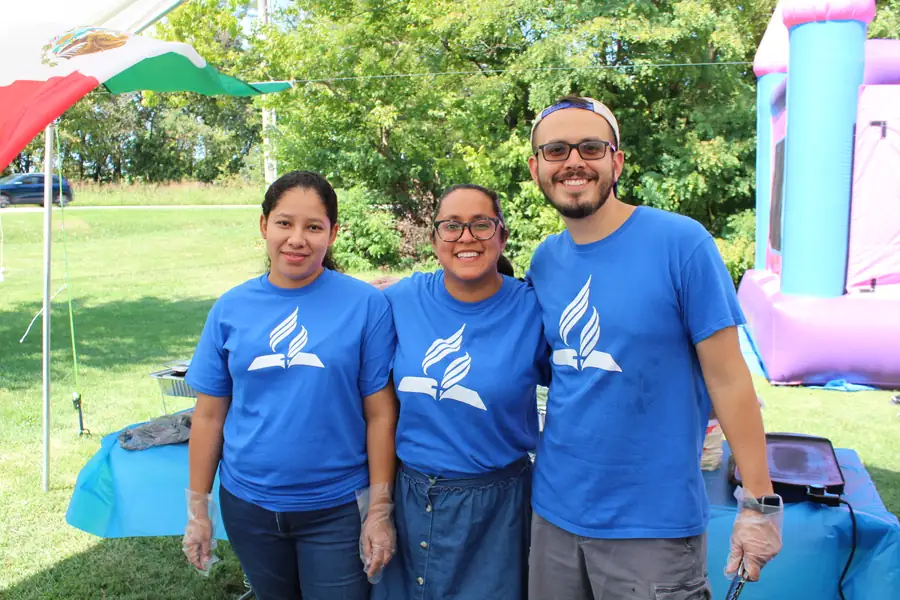
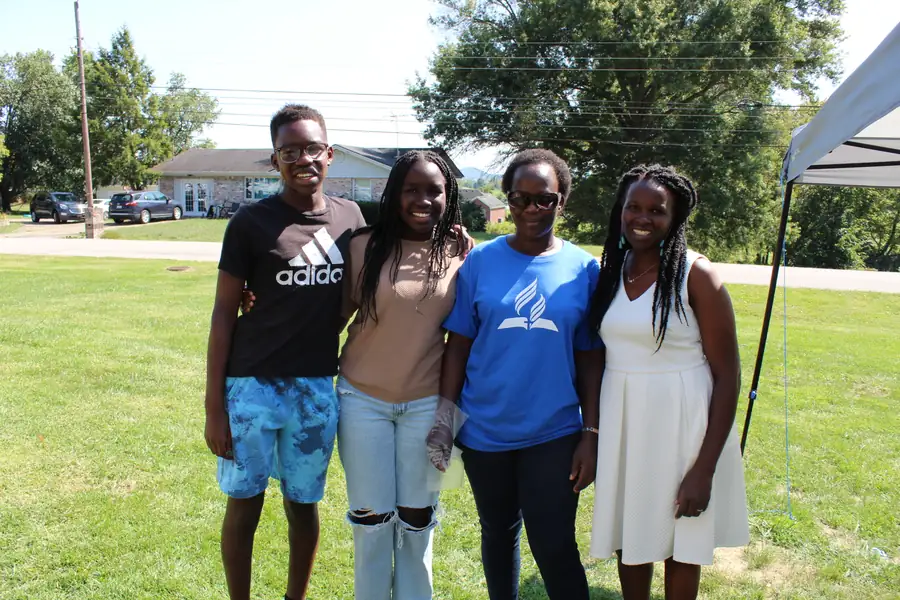
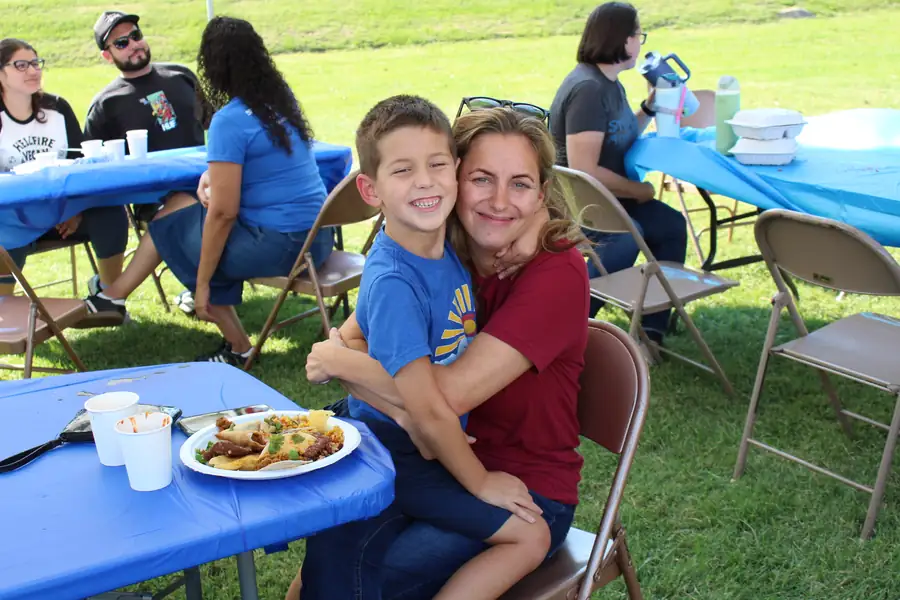
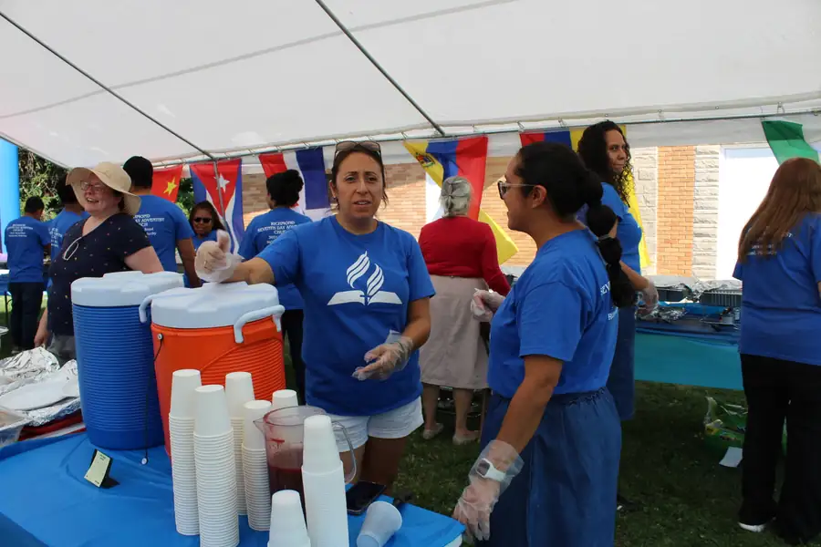
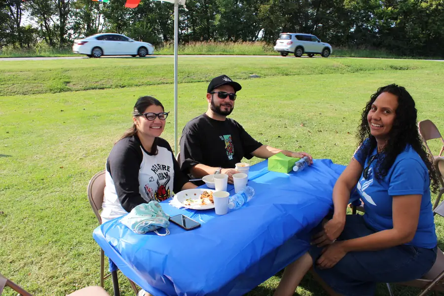

We are a Christ-centered, Bible-based church family in Richmond, Kentucky, sharing God’s love and the hope of Jesus’ soon return.
Wherever you are on your faith journey, you are welcome here. Come as you are, with your questions, your story and your family. There is a seat saved for you.
Plan Your VisitWho We Are
The Seventh-day Adventist Church is a Protestant Christian church that believes the Bible is God’s Word and that salvation is a free gift of grace through Jesus Christ. Our name says two things we hold dear: we keep the seventh-day Sabbath, Saturday, as a weekly day of rest and worship, and we look forward with joy to the second coming, or advent, of Jesus.
We believe God cares about every part of life. How we rest, eat, work, treat one another and care for creation are all part of His plan for wholeness and joy, and every person, family and gift is precious in His sight.
- 24 million+Adventist members around the world
- 212countries and areas where the church is at work
- 1church family here in Richmond, ready to welcome you
World figures as of December 31, 2025, from the Adventist Archives (opens in a new tab).
How We Live It Out
Our mission is simple: to help people experience abundant life today and get ready for Jesus’ return. Here is what that looks like in our church family.
-
Worship
Every Sabbath we gather to praise God, pray together and open His Word, with Sabbath School at 9:30 am and worship at 11:00 am.
-
Fellowship
We share life around the table, from potluck lunches after worship to Friday evening vespers that welcome the Sabbath.
-
Service
Through literature outreach and community events, we bring hope and practical help to our neighbors across Richmond and Madison County.
-
Health & Wholeness
God cares for the whole person. Our Vegan Food Festival celebrates healthy, plant-based living and good food with the whole community.
A Church That Opens Its Doors
Our church family brings together people of many ages, backgrounds and home countries, and we love to celebrate that. In 2023 we hosted our first Vegan Food Festival on the church grounds, sharing plant-based meals, music and conversation with neighbors from all over Richmond.
Whether it is a festival, a potluck or a quiet evening of prayer, you will find people here who are glad you came.






Your First Sabbath With Us
Not sure what to expect? Here is how a Saturday morning at Richmond SDA usually goes.
-
9:30 am
Sabbath School
Small-group Bible study and conversation. Guests are always welcome to join a class or simply listen in.
-
11:00 am
Worship Service
Music, prayer, Scripture and a Bible-based message. Come as you are; there is no dress code to worry about.
-
After worship
Fellowship
Stay and get to know us. On many Sabbaths we share a potluck lunch, and there is always room at the table.
We meet at 3031 Berea Rd, Richmond, KY (directions open in a new tab). See what else is coming up on our events calendar.
“By this shall all men know that ye are my disciples, if ye have love one to another.”
Come Worship With Us
We’d love to meet you this Sabbath. Reach out with any questions, or simply come. We’ll save you a seat.